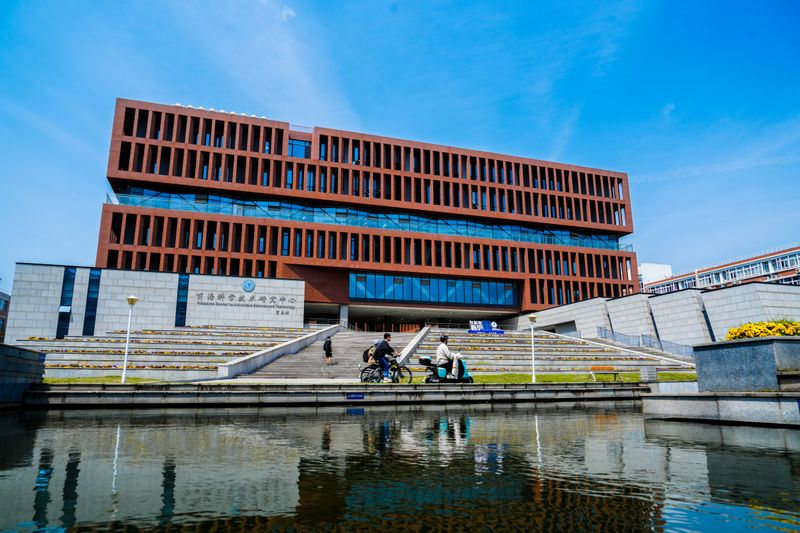

前沿科学技术研究中心
建筑以赤陶色竖向肌理与玻璃带相间，基座为浅灰石材，立面节奏清晰，呈现现代科研楼宇的克制与力量感。前方静水如镜，将楼体与晴空倒映其中，步行与骑行动线穿行其间，既是校园地标，也象征面向前沿、开放协作的科研氛围。
距离示意目标日「2026-10-01 · 金秋校庆季」还有
以下三帧依次展示前沿科学技术研究中心、藤廊寄梦与问鼎广场。适合宣讲投屏；支持自动播放，也可手动切换。
学校肇始于 1956 年创建的杭州航空工业财经学校，后续经历杭州航空工业学校、浙江电机专科学校、杭州无线电工业学校等阶段。1980 年改建为杭州电子工业学院，2004 年更名为杭州电子科技大学，形成了电子信息特色鲜明、理工经管多学科协同发展的办学格局。
从隶属关系看，学校先后历经中央多个工业系统主管时期和浙江省属高校发展阶段，办学定位始终紧贴国家信息产业与区域数字经济需求。
学校创建并多次更名与调整，先后出现多个历史校名，办学形态持续演进。
恢复办学并逐步回归高等教育发展主线。
改建为杭州电子工业学院，电子信息人才培养体系加快成型。
更名为杭州电子科技大学后，在学科建设、人才培养与科研平台上持续拓展。
以下为展示页各主题入口。点击卡片将直接跳转到对应章节页面，便于按主题逐页浏览。